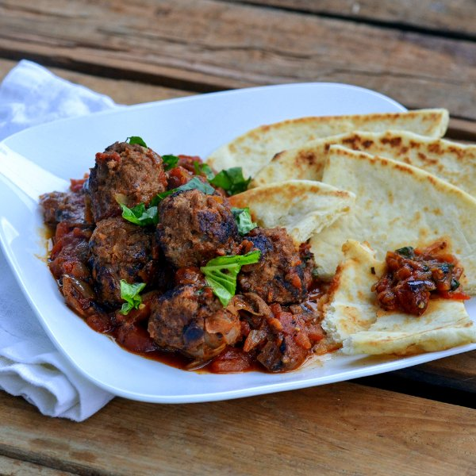

Beef & Ricotta Meatballs in Tomato Sauce with Warm Flatbread

Total Time
45 min
Nutrition (Per Serving)
752.3 kcalCalories
46 gProtein
43.2 gCarbs
44 gFat
Full nutrition table
| Calories | 752.3 kcal |
| Total fat | 44 g |
| Saturated fat | 21.5 g |
| Trans fat | 1.9 g |
| Cholesterol | 161.4 mg |
| Sodium | 421.9 mg |
| Carbohydrates | 43.2 g |
| Fiber | 6.2 g |
| Sugars | 9 g |
| Protein | 46 g |
| Potassium | 1115.5 mg |
| Calcium | 274.3 mg |
| Iron | 7.8 mg |
| Vitamin A | 1374.2 IU |
| Vitamin C | 31 mg |
| Vitamin D | 15.2 IU |
Cookware
Ingredients
- 2 (14.5 oz) cansdiced tomatoes
- 2flatbreads or naan
- 1 small pkgfresh basil
- 6 clovesgarlic
- 1 ½ lblean ground beef
- ½ (15 oz) pkgricotta cheese
- 1 mediumyellow onion
- black pepper
- Italian seasoning
- panko bread crumbs
- salt
- virgin coconut oil
Steps
- Peel and small dice onion. Peel and mince garlic.1 medium yellow onion
6 cloves garlic - In a large bowl, combine ½ of the onion and garlic (save the rest for the sauce), beef, bread crumbs, ricotta, Italian seasoning, salt, and pepper. Mix until well combined.1 ½ lb lean ground beef
¼ cup panko bread crumbs
½ pkg (1 cup) ricotta cheese
2 tsp Italian seasoning
¼ tsp salt
¼ tsp black pepper - Heat a sauté pan over medium-high heat.
- Shape beef into meatballs, about 24, and place on a plate.
- Coat bottom of pan with oil. Add meatballs and, turning frequently, cook until browned, 4-5 minutes. Transfer to a plate.1 tbsp virgin coconut oil
- Return pan to stove and reduce heat to medium. Add remaining onion and garlic. Stirring frequently, cook until onion is softened, 3-4 minutes.
- Add tomatoes, Italian seasoning, salt, and pepper; bring to a boil. Reduce heat to medium-low and add meatballs. Cook until meatballs are cooked through and sauce thickens, about 10 minutes.2 (14.5 oz) cans diced tomatoes
2 tsp Italian seasoning
½ tsp salt
¼ tsp black pepper - Wash and dry basil. Pick leaves off the stems; discard the stems and thinly slice leaves into ribbons. Stir ½ into the sauce while it cooks (save the rest for garnishing).1 small pkg fresh basil
- Toast flatbreads and cut into wedges.2 flatbreads or naan
- To serve, place meatballs and tomato sauce on a plate, garnish with basil, and have with warm bread on the side. Enjoy!